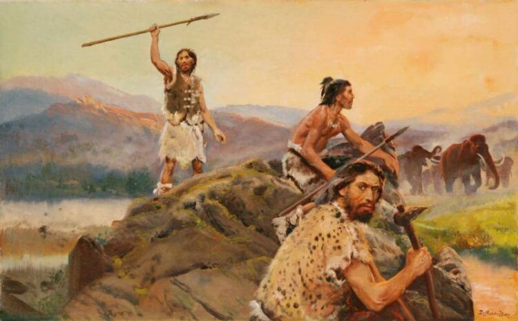

Transportul Preistoric
Mișcare bipedă
Înainte de inventarea roții, oamenii se bazau pe mișcarea bipedă pentru deplasare. Mișcarea bipedă este modul specific în care oamenii și alte creaturi umane se deplasează pe două picioare. Înainte de utilizarea roții, mișcarea bipedă a fost principala metodă de locomotie pentru oameni, iar această capacitate a jucat un rol crucial în evoluția și adaptabilitatea umană.
Mișcarea bipedă a permis oamenilor să exploreze și să colonizeze diferite medii, să caute resurse și să se adapteze la diverse condiții de mediu. Această abilitate a fost esențială pentru supraviețuirea și succesul uman într-o varietate de medii naturale.

Chiar și fără roți, mișcarea bipedă a permis oamenilor să parcurgă distanțe mari, să transporte obiecte și să efectueze activități zilnice. Deși poate fi mai lentă și mai puțin eficientă decât alte metode de transport, cum ar fi folosirea vehiculelor cu tracțiune animală sau a uneltelor de tracțiune, mișcarea bipedă a fost o adaptare crucială care a definit evoluția umană.Prin urmare, mișcarea bipedă a fost principalul mod de deplasare pentru oameni înainte de inventarea roții și a continuat să fie importantă chiar și după aceea, deoarece roata nu a înlocuit complet alte metode de locomotie, ci a fost doar o inovație suplimentară în arsenalul de tehnologii de transport umane.